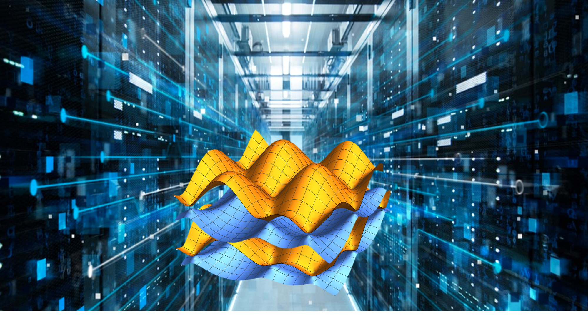

Welcome to the Dong Theoretical and Computational Chemistry Lab!
Accelerate Discovery with Computation & Automation for a Healthy and Sustainable World
We develop and apply physics-based and data-driven computational methods to understand multiscale processes, from electronic structures to emergent properties.
We develop design strategies for molecules, materials, and processes that matter in renewable energy, biomedicine, and other areas of societal importance.
Recent News
July 2024: Congratulations to Emma for passing the PhD proposal defense!
April 2024: Congratulations to Sijia for the COS Excellence in Mentorship Award!
April 2024: Congratulations to Zheyu and Jason for passing the proposal defense for their PhD studies!
April 2024: Congratulations to Janis and Kianna for being selected into Huntington 100, one of the most prestigious honors for Northeastern seniors!
April 2024: Welcome our new PhD student Emma Stevens to the group! Welcome our new postdoc Ka Wa Yip to the group! Ka Wa was trained in quantum information at the University of Southern California with Prof. Daniel Lidar.
March 2024: Sijia spoke at the Museum of Science (Boston) as a “Meet a Scientist” speaker for the Women's History Month Celebration Weekend! Thanks for the invitation! It was a lot of fun!
January 2024: Congratulations to Sijia for being selected to join the inaugural Early Career Board of the Journal of Chemical Theory and Computation (JCTC)!
January 2024: Welcome Bradford to the group! Bradford is an AJC Merit Research Scholar.
January 2024: Congratulations to Kianna for winning the PEAK Experience Award, and Joe for being awarded the Alumni Sponsored Undergraduate Research Fellowship!
October 2023: Congratulations to Sijia for being selected as a Scialog Fellow for Automating Chemical Laboratories by Research Corporation for Science Advancement!
September 2023: Congratulations to Joe, Janis, and Deeptha for winning the PEAK Experience Awards for Fall 2023!
August 2023: Super excited that we have been selected for funding by the Department of Energy to break the barrier between different quantum computing architectures to enable large-scale electronic structure and dynamics simulations! Looking forward to this endeavor with Dr. Kübra Yeter-Aydeniz from MITRE! Keep pushing science to the extreme scale!
Read DOE's official announcement and Northeastern Global News.
July 2023: We are excited and grateful to receive funding from the National Science Foundation to work on molecularly imprinted polymers as enzyme-mimicking catalysts in collaboration with Prof. Yan Zhao from Iowa State University!
June 2023: The group had three talks at ACS NERM! One by postdoc Bhumika on photoenzymes, one by undergrads Janis and Deeptha on algorithm development and analysis of the Protein Data Bank, and one by PhD student Ben on automated active space selection. Good job!
June 2023: Welcome NSF REU student Ian to the group!
May 2023: Congratulations to Ben, Nithin, and Pratima for their work on automated active space selection for multireference methods, which has been published in J. Chem. Theory Comput. and featured on the front cover! Special congratulations to Ben for his first first-author paper! Also for his creative design of the cover art!
April 2023: Welcome our new postdocs Felipe and Gustavo to the group! Felipe was trained in biophysics and chemistry at the University of São Paulo, Brazil, with Prof. Guilherme M. Arantes. Gustavo is a Lindau alumnus trained in the group of Prof. Joaquín Barroso-Flores at National Autonomous University of Mexico. They will work on multiscale simulations of both the ground-state and excited-state chemistry/physics of macromolecules.
October 2022: Congratulations to Joshua for being selected as one of the six university nominees for the Knight-Hennessy Scholars Program!
October 2022: Congratulations to Zheyu and Ruimeng for co-authoring our collaborative work with the Zhang Group, which has been published in Angew. Chem. Int. Ed.!
September 2022: Sijia has given several invited talks this summer. Finally back to in-person conferences!
August 2022: We are excited to receive funding from the DOE as part of the BioLEC EFRC!
July 2022: Welcome our postdoc Dr. Bhumika Jayee to the group! Bhumika came from the groups of Prof. William L. Hase and Prof. Hans Lischka.
June 2022: Congratulations to Janis and Deeptha for winning the PEAK Experience Base-Camp Award for Summer of 2022! Good job, Janis and Deeptha!
June 2022: Welcome our REU students this year, Hana Cheng from SUNY Oswego and Rabab Alrufayi from MIT!
May 2022: Congratulations to Nithin for the Outstanding Undergraduate Research Award and the ACS Physical Chemistry Award!
May 2022: Congratulations to Joshua for winning the PEAK Experience Trail Blazer Award! Good job, Joshua!
March 2022: Congratulations to Nithin for co-authoring our first collaborative work with the Kirss Group! Good job, Nithin!
February 2022: Congratulations to Joshua for winning the PEAK Experience Base-Camp Award for Spring of 2022! Good job, Joshua!
November 2021: Sijia's work has been selected to be part of the themed collection Editor’s Choice – Graeme Day in Chemical Science!
November 2021: Welcome undergraduate students Joshua, Joseph, Karen, Deeptha, Nathaniel, and Matthew to the group!
September 2021: Welcome Pratima to the group! Pratima is an Experiential AI Postdoctoral Fellow.
June 2021: Sijia is featured in a College of Science Faculty Spotlight article.
News Archive